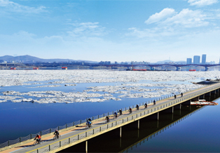

도심 속 시민들의 휴식처를 달린다!
한강종주 자전거길은 강을 거슬러 오르지만 오르막이 없고 노폭이 넓어, 두바퀴와 더불어 또나는 여행은 공원을 산책하듯이 편하고 아늑하다.
조선시대 이래 600여 년 동안 수도 서울의 역사와 함께 흐르는 한강은
한민족의 젖줄이자 대한민국의 랜드마크!
그래서 '한강의 기적'을 창조한 그 젖줄을 따라 달리는 자전거 여행은
더욱 역동적이고 감동적이다.